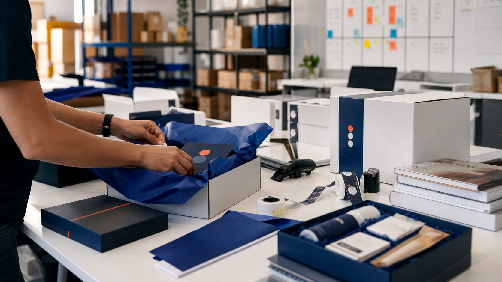
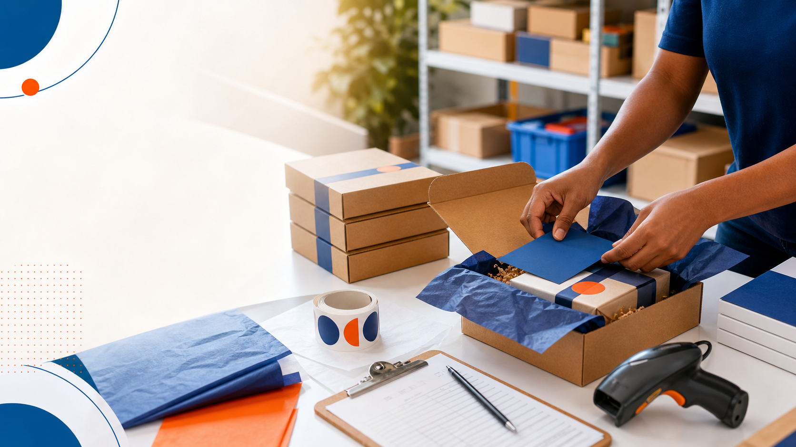

Press kits & operações especiais
Muito mais do que enviar um kit.
Planejamos, organizamos, montamos, armazenamos e expedimos projetos especiais para marcas que valorizam experiência, controle e execução.
Falar sobre um projeto ↗
A operação por trás da experiência
Para quem recebe, é um momento. Para quem executa, é processo.
Um press kit memorável depende de curadoria, conferência, embalagem, personalização, armazenamento, expedição e acompanhamento. Quando essas etapas não estão organizadas, a experiência final sofre.
Entramos para estruturar a operação completa: do planejamento do fluxo até a entrega e visibilidade do projeto.
Fluxo operacional
Cada etapa com controle, cuidado e rastreabilidade.
Recebimento
Entrada dos materiais, conferência inicial e organização por projeto.
Armazenagem
Produtos, brindes e embalagens separados com controle para montagem.
Curadoria
Sequência, apresentação, experiência de abertura e padrão visual do kit.
Montagem
Produção dos kits com checklist, padronização e atenção ao detalhe.
Personalização
Etiquetas, nomes, mensagens, variações e regras específicas por envio.
Expedição
Separação, embalagem, postagem, rastreamento e acompanhamento.
Bastidores
Uma estrutura pensada para fazer acontecer sem improviso.

Sem citar nomes de clientes, o que importa aqui é a capacidade: organizar muitos detalhes para que a entrega pareça simples.
Terceirizar com controle